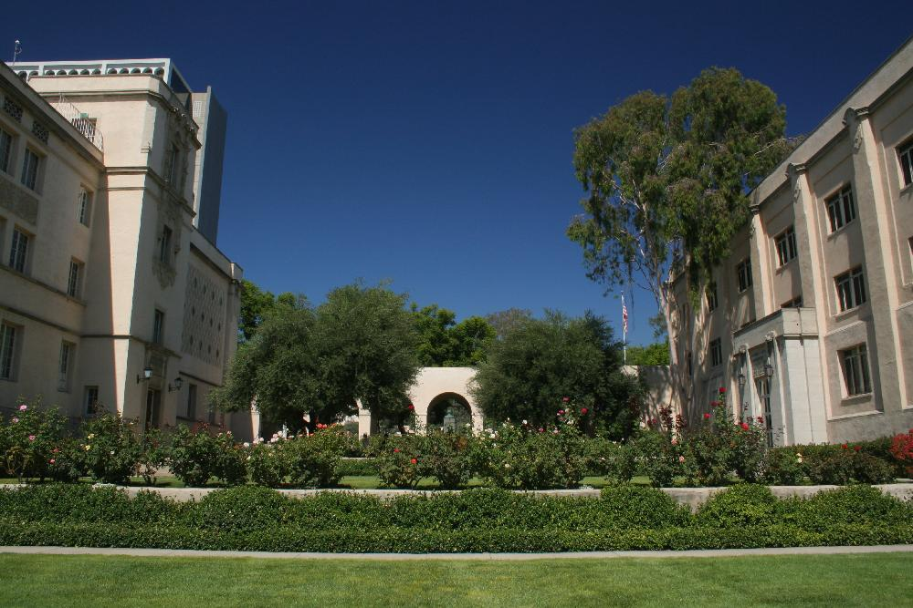

Caltech is a school in Pasadena, California, about 11 miles away from Los Angeles. It was founded in 1891 and has a size of 124 acres with a suburban setting. Caltech is known for its emphasis in STEM majors, with its top five major choices being engineering, physical sciences, computer science, mathematics, biological and biomedical sciences. Caltech’s student-faculty ratio is 3:1. Caltech does not have greek life, as there are no fraternities or sororities at the school. The mascot for Caltech is the beaver, nature’s engineer. Famous alumni include Carl D. Anderson, who proved the existence of positrons and muons and Douglas D. Osheroff, who won the Nobel Prize in Physics in 1996 for his work in experimental condensed matter.
